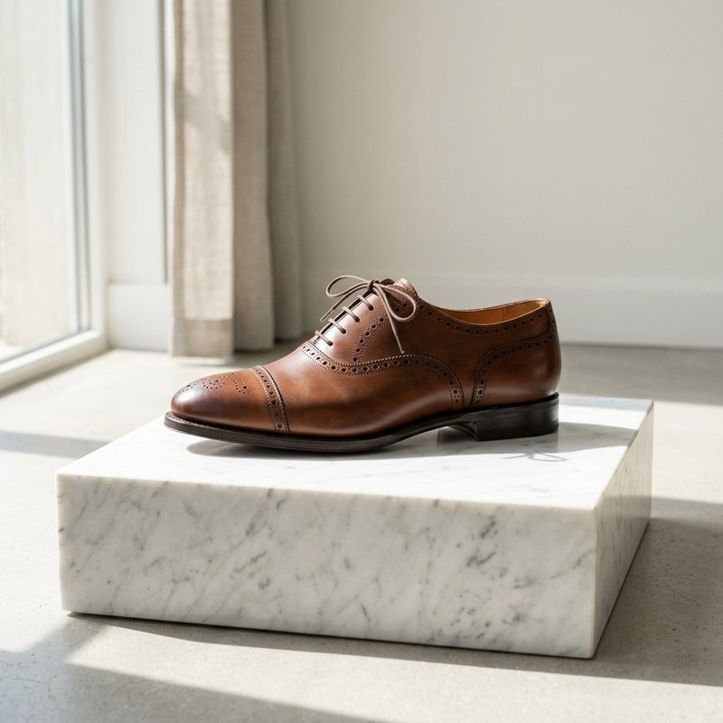

Step Into Timeless Craftsmanship
Every Bristol shoe is handcrafted by Marikina's master cobblers using premium leather.

Every Bristol shoe is handcrafted by Marikina's master cobblers using premium leather.

Bristol Shoes is a proudly Filipino brand rooted in Marikina City. For decades, we've crafted premium leather footwear that balances elegance with comfort.
Learn More